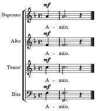

This work is licensed under a Creative Commons Attribution 4.0 International License.
|  |
Complete score / Partitura completă:PDF Source files / Fișiere sursă: src/ Midi files / Fișiere midi: midi/ Midi archive / Arhiva midi: midi.zip |
| Ectenia mare | ||
| Amin (1) | SATB | soprano | alto | tenor | bass | lilypond |
| Doamne miluiește (1) | SATB | soprano | alto | tenor | bass | lilypond |
| Doamne miluiește (2) | SATB | soprano | alto | tenor | bass | lilypond |
| Doamne miluiește (3) | SATB | soprano | alto | tenor | bass | lilypond |
| Doamne miluiește (4) | SATB | soprano | alto | tenor | bass | lilypond |
| Doamne miluiește (5) | SATB | soprano | alto | tenor | bass | lilypond |
| Preasfântă Născătoare de Dumnezeu | SATB | soprano | alto | tenor | bass | lilypond |
| Ție Doamne (1) | SATB | soprano | alto | tenor | bass | lilypond |
| Amin (2) | SATB | soprano | alto | tenor | bass | lilypond |
| Antifoanele | ||
| Antifonul I (Mărire... și acum...) | SATB | soprano 1 | soprano 2 | alto | tenor 1 | tenor 2 | bass | lilypond |
| Antifonul I (Binecuvintează...) | SATB | soprano | alto | tenor | bass | lilypond |
| Antifonul al II-lea (Mărire... și acum...) | SATB | soprano 1 | soprano 2 | alto | tenor 1 | tenor 2 | bass | lilypond |
| Antifonul al II-lea (Unule Născut) | SATB | soprano | alto | tenor | bass | lilypond |
| Antifonul al III-lea (Fericirile) | SATB | soprano | alto | tenor | bass | lilypond |
| Intrarea mică | ||
| Veniți să ne închinăm | SATB | soprano | alto | tenor | bass | lilypond |
| Doamne mântuiește | SATB | soprano | alto | tenor + bass | lilypond |
| Și ne auzi pe noi | SATB | soprano | alto | tenor + bass | lilypond |
| Trisaghion | ||
| Sfinte Dumnezeule | SATB | soprano | alto | tenor | bass | lilypond |
| Mărire... și acum... | SATB | soprano | alto | tenor | bass | lilypond |
| Sfinte făr' de moarte | SATB | soprano | alto | tenor | bass | lilypond |
| (Puternic) Sfinte Dumnezeule | SATB | soprano | alto | tenor | bass | lilypond |
| Câți în Hristos v-ați botezat | SATB | soprano | alto | tenor | bass | lilypond |
| Apostolul și Evanghelia | ||
| Aliluia | SATB | soprano | alto | tenor | bass | lilypond |
| Și duhului tău | SATB | soprano | alto | tenor | bass | lilypond |
| Mărire Ție, Doamne | SATB | soprano | alto | tenor | bass | lilypond |
| Ectenia întreită și ectenia pentru cei morți | ||
| Ectenia întreită | SATB | soprano | alto | tenor | bass | lilypond |
| Doamne miluiește (1), glasul 5 | solo | lilypond |
| Doamne miluiește (2), glasul 5 | solo | lilypond |
| Dă Doamne | solo | lilypond |
| Doamne miluiește (3), glasul 5 | solo | lilypond |
| Veșnica pomenire | solo | lilypond |
| Heruvice | ||
| Heruvic, glasul 3 (Bortniansky) | SATB | soprano | alto | tenor | bass | lilypond |
| Heruvic, glasul 5 (I. Popescu-Pasărea) | SATB | soprano | alto | tenor | bass | lilypond |
| Ca pe Împăratul | SATB | soprano | alto | tenor + bass | lilypond |
| Ectenia punerii înainte | ||
| Dă Doamne (1) | SATB | soprano | alto | tenor | bass | lilypond |
| Dă Doamne (2) | SATB | soprano | alto | tenor | bass | lilypond |
| Dă Doamne (3) | SATB | soprano | alto | tenor | bass | lilypond |
| Dă Doamne (4) | SATB | soprano | alto | tenor | bass | lilypond |
| Dă Doamne (5) | SATB | soprano | alto | tenor | bass | lilypond |
| Dă Doamne (6) | SATB | soprano | alto | tenor | bass | lilypond |
| Sărutul păcii | ||
| Pe Tatăl, pe Fiul... | solo | lilypond |
| Răspunsurile mari | ||
| Mila păcii, jertfa laudei | SATB | soprano | alto | tenor | bass | lilypond |
| Și cu duhul tău | SATB | soprano | alto | tenor | bass | lilypond |
| Avem către Domnul | SATB | soprano | alto | tenor | bass | lilypond |
| Cu vrednicie și cu dreptate... | SATB | soprano | alto | tenor | bass | lilypond |
| Sfânt, Sfânt, Sfânt Domnul Savaot | SATB | soprano | alto | tenor | bass | lilypond |
| Prefacerea Darurilor | ||
| Amin (3) | SATB | soprano | alto | tenor | bass | lilypond |
| Amin (4) | SATB | soprano | alto | tenor | bass | lilypond |
| Pe Tine Te lăudăm | SATB | soprano | alto | tenor | bass | lilypond |
| Axionul Născătoarei de Dumnezeu | ||
| Cuvine-se cu adevărat, glasul 5 | SATB | soprano | alto | tenor | bass | lilypond |
| Pe toți și pe toate | solo | lilypond |
| Și cu duhul tău | SATB | soprano | alto | tenor | bass | lilypond |
| Rugăciunea Domnească | ||
| Tatăl nostru | SATB | soprano | alto | tenor | bass | lilypond |
| Unul Sfânt | solo | lilypond |
| Sfânta Împărtășanie | ||
| Bine este cuvântat | SATB | soprano | alto | tenor | bass | lilypond |
| Trupul lui Hristos | SATB | soprano | alto | tenor | bass | lilypond |
| Am văzut lumina | SATB | soprano | alto | tenor | bass | lilypond |
| Ectenia de mulțumire | ||
| Ție Doamne (2) | SATB | soprano | alto | tenor | bass | lilypond |
| Întru numele Domnului | solo | lilypond |
| Rugăciunea amvonului și otpustul | ||
| Fie numele Domnului binecuvântat | SATB | soprano | alto | tenor + bass | lilypond |
| Mărire... și acum... doamne miluiește... | solo | lilypond |
| Amin (5) | solo | lilypond |
| Amin (6) | solo | lilypond |
| Alte cântări liturgice | ||
| De tine se bucură, glasul 5 (N. Moldoveanu) | SATB | soprano | alto | tenor | bass | lilypond |
| Îngerul a strigat, glasul 3 (Protosinghelul Varlaam) | SATB | soprano | alto | tenor | bass | lilypond |
| Colinde de Florii | ||
| Azi cu toți să prăznuim (Gh. Cucu) | SATB | soprano | alto | tenor + bass | lilypond |
| Veniți cu toți dimpreună (Tim. Popovici) | SATB | soprano | alto | tenor | bass | lilypond |
| Veniți norii de mulțime (Gh. Cucu) | SATB | soprano | alto | tenor + bass | lilypond |
| Doamne Iisuse Hristoase (Gh. Cucu) | SATB | soprano + alto | tenor | bass | lilypond |